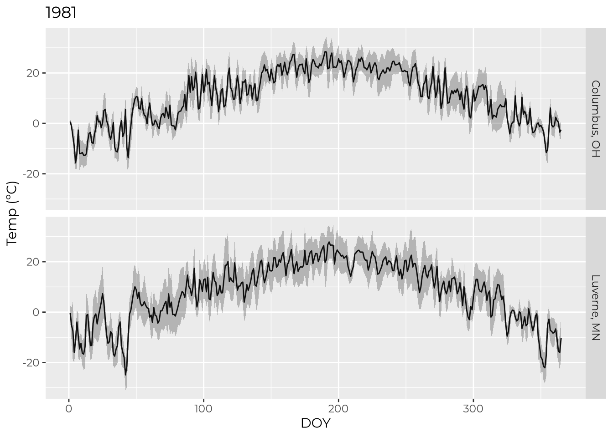
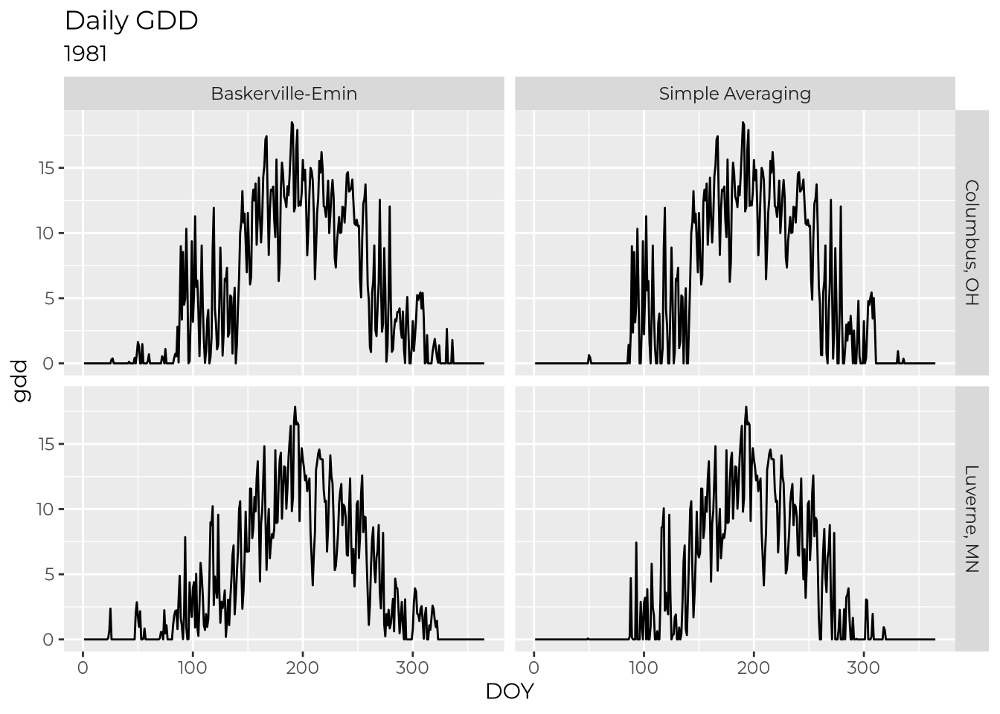
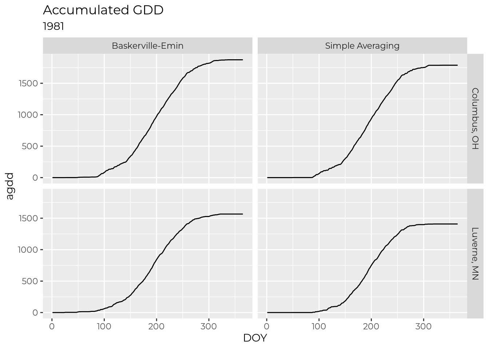
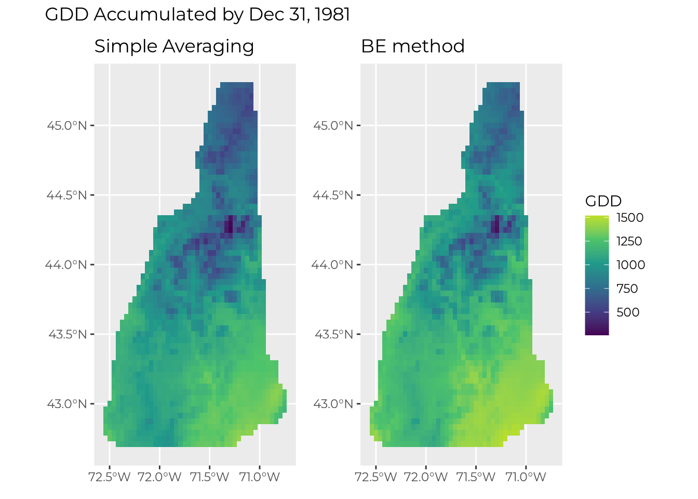
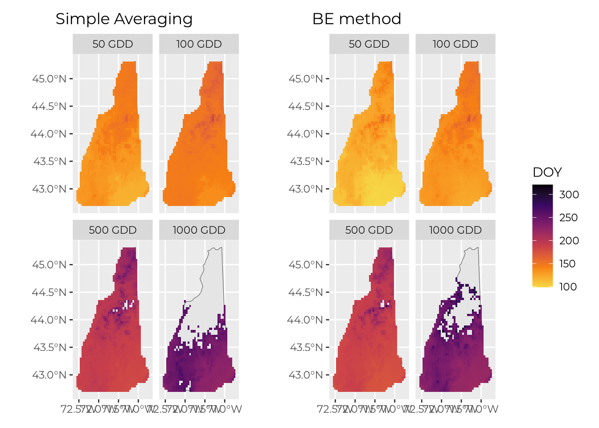

Code
library(targets)
library(fs)
library(terra)
library(sf)
library(tidyr)
library(ggplot2)
library(dplyr)
library(tidyterra)
library(patchwork)
tar_load(
c(starts_with("prism_"), cities_sf, roi),
store = here::here("_targets")
)Last we spoke, we decided it was important to decide on a method for calculating GDD, specifically either the simple averaging method or the Baskerville-Emin method. This report implements functions for both (please scrutinize!) and shows a few comparisons.
All the following GDD calculations use ºC with a base temp of 10 ºC. It occurred to me that units (ºF or ºC) might have been part of the confusion at our last call.
library(targets)
library(fs)
library(terra)
library(sf)
library(tidyr)
library(ggplot2)
library(dplyr)
library(tidyterra)
library(patchwork)
tar_load(
c(starts_with("prism_"), cities_sf, roi),
store = here::here("_targets")
)read_prism <- function(rast_dir) {
files <- fs::dir_ls(rast_dir, glob = "*.zip")
#convert filenames to DOY to use for layer names
doys <- files |>
fs::path_file() |>
stringr::str_extract("\\d{8}") |>
lubridate::ymd() |>
lubridate::yday()
#construct paths with /vsizip/ to read inside .zip files
bils <-
files |>
fs::path_file() |>
fs::path_ext_set(".bil")
rast_paths <- paste0("/vsizip/", fs::path(files, bils))
#read in multi-layer rasters
prism <- terra::rast(here::here(rast_paths))
names(prism) <- doys
terra::units(prism) <- "ºC"
#return
prism
}
prism_tmean81 <- read_prism(here::here(prism_tmean[1]))
prism_tmin81 <- read_prism(here::here(prism_tmin[1]))
prism_tmax81 <- read_prism(here::here(prism_tmax[1]))
varnames(prism_tmean81) <- "tmean_c"
varnames(prism_tmin81) <- "tmin_c"
varnames(prism_tmax81) <- "tmax_c"Extract timeseries data from a few cities to play around with
extract_cities <- function(prism, cities_sf) {
terra::extract(prism, cities_sf) |>
mutate(city = cities_sf$city) |>
select(-ID) |>
pivot_longer(
-city,
names_to = "DOY",
values_to = unique(varnames(prism)),
names_transform = list(DOY = as.integer)
)
}
cities_tmean <- extract_cities(prism_tmean81, cities_sf)
cities_tmin <- extract_cities(prism_tmin81, cities_sf)
cities_tmax <- extract_cities(prism_tmax81, cities_sf)
df <-
full_join(cities_tmean, cities_tmin) |>
full_join(cities_tmax)ggplot(df, aes(x = DOY, y = tmean_c)) +
geom_line() +
geom_ribbon(aes(ymin = tmin_c, ymax = tmax_c),
color = NA, alpha = 0.3) +
facet_grid(rows = vars(city)) +
labs(title = "1981", y = "Temp (ºC)")
Simple averaging
#' Simple averaging method for GDD calculation
#'
#' @param tmin Numeric vector; min daily temp in ºC.
#' @param tmax Numeric vector; max daily temp in ºC.
#' @param tmean Numeric vector; mean daily temp in ºC. If left blank, `tmean`
#' will be calculated as the mean of `tmin` and `tmax`.
#' @param base Base temp in ºC.
calc_gdd_simple <- function(tmin = NULL, tmax = NULL, tmean = NULL, base = 0) {
if (is.null(tmean)) {
tmean <- (tmax + tmin) / 2
}
if (base != 0) {
gdd <- tmean - base
} else {
gdd <- tmean
}
gdd[gdd < 0] <- 0
gdd
}Baskerville-Emin method
#' Baskerville-Emin method for GDD calculation
#'
#' @param tmin Numeric vector; min daily temp in ºC.
#' @param tmax Numeric vector; max daily temp in ºC.
#' @param base Base temp in ºC.
#' @references
#' https://www.canr.msu.edu/uploads/files/Research_Center/NW_Mich_Hort/be_method.pdf
calc_gdd_be <- function(tmin = NULL, tmax = NULL, base = 0) {
purrr::map2_dbl(tmin, tmax, \(tmin, tmax) { #for each day...
#NAs beget NAs
if (is.na(tmin) | is.na(tmax)) {
return(NA)
}
#step 2
if (tmax < base) {
return(0)
}
#step 3
tmean <- (tmin + tmax) / 2
#step4
if (tmin >= base) { #simple case
return (tmean - base)
}
#step5
W <- (tmax - tmin) / 2
A <- asin((base - tmean) / W)
gdd <- ((W * cos(A)) - ((base - tmean) * ((pi/2) - A))) / pi
return(gdd)
})
}df_gdd <-
df |>
group_by(city) |>
mutate(`Simple Averaging` = calc_gdd_simple(tmean = tmean_c, base = 10),
`Baskerville-Emin` = calc_gdd_be(tmin = tmin_c, tmax = tmax_c, base = 10)) |>
select(-ends_with("_c")) |>
pivot_longer(c(-city, -DOY), names_to = "method", values_to = "gdd") |>
group_by(city, method) |>
arrange(DOY) |>
mutate(agdd = cumsum(gdd))ggplot(df_gdd, aes(x = DOY, y = gdd)) +
facet_grid(rows = vars(city), cols = vars(method)) +
geom_line() +
labs(title = "Daily GDD",
subtitle = "1981")
ggplot(df_gdd, aes(x = DOY, y = agdd)) +
facet_grid(rows = vars(city), cols = vars(method)) +
geom_line() +
labs(title = "Accumulated GDD",
subtitle = "1981")
df_gdd |>
group_by(city, method) |>
summarize(
max_agdd = max(agdd),
doy_50 = min(which(agdd >= 50)),
doy_100 = min(which(agdd >= 100)),
doy_500 = min(which(agdd >= 500)),
doy_1000 = min(which(agdd >= 1000)),
.groups = "drop"
) |>
knitr::kable()max_agdd = total accumulated GDD for 1981. doy_* columns show the DOY different GDD thresholds are reached on.
| city | method | max_agdd | doy_50 | doy_100 | doy_500 | doy_1000 |
|---|---|---|---|---|---|---|
| Columbus, OH | Baskerville-Emin | 1873.493 | 94 | 103 | 165 | 202 |
| Columbus, OH | Simple Averaging | 1787.016 | 98 | 108 | 167 | 206 |
| Luverne, MN | Baskerville-Emin | 1565.911 | 97 | 115 | 175 | 215 |
| Luverne, MN | Simple Averaging | 1408.154 | 117 | 135 | 182 | 223 |
Let’s take NH as an example
#Create a vector of the state
NH_vect <-
maps::map(
database = "state",
regions = "New Hampshire",
plot = FALSE,
fill = TRUE
) |>
sf::st_as_sf() |>
sf::st_combine() |>
terra::vect()
# Crop the PRISM data to the state
NH_tmin <- prism_tmin81 |> crop(NH_vect, mask = TRUE)
NH_tmax <- prism_tmax81 |> crop(NH_vect, mask = TRUE)#create a spatial dataset with the two layers we need
NH_sd <- sds(NH_tmin, NH_tmax)
#app takes an anonymous function with one arg which is like a matrix
#i[1] is the first dataset in the sds (tmin), i[2] is the second (tmax)
gdd_simple <-
app(NH_sd, function(i) {
calc_gdd_simple(tmin = i[1], tmax = i[2], base = 10)
})
gdd_be <-
app(NH_sd, function(i) {
calc_gdd_be(tmin = i[1], tmax = i[2], base = 10)
})
# get accumulated gdd with cumsum()
agdd_simple <- cumsum(gdd_simple)
agdd_be <- cumsum(gdd_be)First we can just take a look at how many GDD are accumulated by the end of the example year (1981).
# get common limits for scale
lims <- range(values(agdd_simple[[365]]), values(agdd_be[[365]]), na.rm = TRUE)
p_agdd_simple <- ggplot() +
geom_spatraster(data = agdd_simple[[365]]) +
scale_fill_viridis_c(
limits = lims,
na.value = "transparent",
end = 0.9, #don't use the lightest yellow—hard to see on white background
) +
labs(title = "Simple Averaging", fill = "GDD")
p_agdd_be <- ggplot() +
geom_spatraster(data = agdd_be[[365]]) +
scale_fill_viridis_c(
limits = lims,
na.value = "transparent",
end = 0.9, #don't use the lightest yellow—hard to see on white background
) +
labs(title = "BE method", fill = "GDD")
p_agdd_simple + p_agdd_be +
plot_layout(guides = "collect") +
plot_annotation(title = "GDD Accumulated by Dec 31, 1981")
We can also look at the DOY some arbitrary thresholds are met
thresholds <- c(50, 100, 500, 1000)
doy_simple <-
purrr::map(thresholds, \(x) which.lyr(agdd_simple >= x)) |>
purrr::set_names(paste(thresholds, "GDD")) |>
rast()
doy_be <-
purrr::map(thresholds, \(x) which.lyr(agdd_be >= x)) |>
purrr::set_names(paste(thresholds, "GDD")) |>
rast()#get common range
lims <- range(values(doy_simple), values(doy_be), na.rm = TRUE)
p_doy_simple <- ggplot() +
geom_spatvector(data = NH_vect) +
geom_spatraster(data = doy_simple) +
facet_wrap(~lyr) +
scale_fill_viridis_c(
limits = lims,
na.value = "transparent",
option = "B",
direction = -1, #earlier DOY = hotter color
end = 0.9, #don't use the lightest yellow—hard to see on white background
) +
labs(title = "Simple Averaging", fill = "DOY")
p_doy_be <- ggplot() +
geom_spatvector(data = NH_vect) +
geom_spatraster(data = doy_be) +
facet_wrap(~lyr) +
scale_fill_viridis_c(
limits = lims,
na.value = "transparent",
option = "B",
direction = -1, #earlier DOY = hotter color
end = 0.9, #don't use the lightest yellow—hard to see on white background
) +
labs(title = "BE method", fill = "DOY")
p_doy_simple + p_doy_be + plot_layout(guides = "collect")